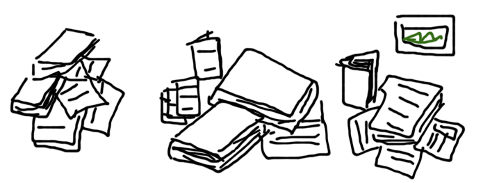

Tomorrow Monique and I will be heading down to Wilson’s Prom, our study area, to conduct surveys and interviews with park visitors.
 Chris
Chris
Information overload
There’s variations of this quote floating around everywhere at the moment, but it doesn’t take a stretch of the imagination to come to the conclusion that something close to this figure is true.
All the data collected from year 0 to 2003 is the same amount of data we now produce in a week.
I’m not sure how this is being measured but I’m guessing it’s the amount of recorded output from humans over that time. Books, Newspapers, TV, Radio. Also, a common measurement is the amount of bandwidth the internet uses now compared to 10 years ago. Video is a monster.
It would be interested seeing the calculations behind these claims, but despite that, this huge increase in information lends itself to some questions:
– How much of it is “useful”? (and how do you even define “useful”?)
– How do we make sense of it?
– Should we even bother?
I’m inclined to think that all information is of use to someone, given the right interpretation and the right context. Given clarity of that context, some information just requires more abstraction than others.
What’s exciting to consider is what we’re now able to learn that we’ve never be close to knowing before.
All it would take is the right tools in the hands of the right people and some amazing insights could be made.
What do you think?
GeoCart’2010 Presentation
Today I gave a talk about the role of GeoVisualisation in making sense of location based information at GeoCart’2010 in Auckland, New Zealand. It was well received and I got some tough questions from the audience afterwards – always a good sign.
I’ll post a link to the paper I wrote a bit later on, but hopefully the slides are fairly self explanatory!
Location is not enough
Progressing on from my previous post regarding the subjective nature of locations in a National Park (i.e. that rangers view places differently from each other and that their views may also change over time), I have written something in the conclusion of my OZCHI paper that I think hits the nail on the head. Location is not enough – location is just a coordinate. The question is, how can you infer the context that exists between a location and the person? Why is that person in a place and what are they hoping to do there?
Here’s the part from the paper. If you’d like the references mentioned just let me know:
Geovisualisation is an important tool that assists in the analysis and discovery of information amongst the plethora of location-based data we now have ready access to. The act of visualising data is repaid exponentially in terms of cognitive savings (Larkin & Simon, 1987), and can lead to the formation of deeper and better quality understanding about a problem domain (Lowe and Bouchiex, 2008).
However, the subjective, social nature of knowledge does highlight the importance of people in the ecology of sense-making and knowledge discovery – it is important not only to understand how people will interact with geo-visualisation interfaces, but also how they go about generating and absorbing knowledge from their existing social structures; that is, how they share and communicate with each other.
Any intelligent interface designed to meet the needs of the current research project should not only be concerned with the display of location-based data, but it should also be aware of the social and environmental contexts in which it is being used.
Subsequently, it is not enough that data being displayed be tagged with a location in the form of GPS coordinates. From a machine and computational perspective this is the necessary first step towards providing information about a place, but from a human-interaction perspective the display and dissemination of this data needs additional context. Simply: a person may be in the same location for entirely different purposes, and an intelligent location-based service needs to be aware of this purpose.
Geovisualisations are an important tool for the sense and decision-making processes, but it is the role of the holistic design of a system (that includes geovisualisation) to infer a better quality understanding of the goals and motivations of a user based on their location. It is hoped that further research in this project will provide insights into how location can be augmented with this further context, and how geovisualisation can assist users to explore this.
I think I’ve latched on to a new take on the project, but I need to do more reading into ubicomp and context-awareness to get a better understanding of what work has already been done in this space.
Any suggestions? Thoughts? Thanks!
OZCHI ’10
I’m submitting a short paper to the OZCHI ’10 conference held in Brisbane, Australia. Here’s the abstract put together with the help of my supervisors:
The proliferation of consumer electronics devices that are Global Positioning System (GPS)- enabled has led to an increase in the availability and quantity of data that is geo-located. The position of where certain data has been captured, photographs taken, or places visited can be easily and quickly appended to files generated by a portable device. Related to the capture of information and the subsequent geo-coding has been the need to visualise this data.
Geovisualisation, the viewing of geographical data and representations of geography (maps) through the frame of location, has become an important method for sense-making and knowledge discovery. Recent research in this relatively new field has positioned it as being more akin to “geovisual analytics”, with an emphasis on the cognitive elements of exploration of data through highly interactive interfaces rather than a simple static display. This repositioning highlights the importance of the human elements of interaction with geo-based data and the interfaces designed to present them. How should interaction be guided by the role of location? How can interfaces provide information to users that is place-specific or location ‘bounded?
In an attempt to provide a background to the benefits of geovisual analytics, this paper will explore the role that perception has in complex problem solving and knowledge discovery. It will demonstrate that, through the use of modern interactive technologies, (geo)visualisations can augment and facilitate our natural ability to see novel, surprising and otherwise invisible relationships between information. As well, it will discuss a current research project that is developing concepts that will be implemented to assist in the management of natural environments – specifically in a national parks setting. It will also demonstrate the application of this research in a broader project that is being conducted with Parks Victoria, around national park management – particularly, fire management and prevention.
it still needs a bit of tweaking, but I’d be keen to hear your thoughts!
Reference Piles

Completing a PhD is meant to show that you are able to stick at a complex topic and explore it in a disciplined and systematic way, paying attention to existing literature and eventually, after some years, adding your bit to the vast pool of human knowledge.
{kind=link}
Research questions are the core around which you conduct these activities, and serve to focus your efforts when it comes to researching and exploring the vast amounts of information out there. Recently though, I find myself growing an increasing list of references in things that I’d really love to get a handle on, but seem to not have the time to digest fully. As a bit of fear of not remaining focus has crept in recently, I thought I’d consolidate some of my current and extra research interests. Inspired in a round about way by challenge piles, here are my Reference Piles representing the broad topics I’m interested in, and what questions I want to find answers to inside those.
Pile #1: Knowledge
I spent a long time trying to answer the question: “What is knowledge?”. It’s a lot harder than it sounds! I guess in 2.5 years time I will have taken a stance on it, but for now I’m going to remain deliberately vague and instead talk about what I think I need to know more about:
- What I can learn from the more business-management style frameworks around knowledge, particularly tacit knowledge, or “know how”.
- The more sociological side of things, revolving around communities of practice and the theories that discuss how we learn from each other, rather than what it is we actually learn. This should inform the design of a broader sense-making framework.
Pile #2: Visualisation
This is what I’ve written the most on in papers, etc to date and what I’m most comfortable talking about. I feel I’ve got a good handle on how we make sense of images, why they help us, and what makes a good one. Still, I’d like to find out more about:
- Social objects, and how the actual artefact of a visualisation can be used to reach shared understandings. That is, how a visualisation can help groups of people understand versus just an individual.
- Types and variations of geovisualisations and how I might be able to apply them
Pile #3: Location Based Services (LBS)
I’m positioning this research as exploring LBS in relation to a national park, but the reality is it is more context aware than location based as such. I’ve sort of started fresh with this in the last few weeks, so here is what I’m hoping to uncover:
- Frameworks for talking about location types and the contexts that are applicable to them
- An understanding of the technologies involved in provided context-aware applications. Particular the technical side of phone networks and GPS.
- Definitions, studies and examples of LBS, mobile-based systems and ubiquitous computing, particular those that have a mix of intelligent information collection and delivery, coupled with a more traditional “desk bound” visualisation and sense-making interface
Pile #4: Parks Management and Ecology
Obviously one of the most important areas of a PhD dealing with natural environments – despite approaching it from a HCI/Technology perspective, I will basically have to become as close to a park ranger as I can. Further, I will need to understand:
- What’s important when making decisions around park management, particularly when it comes to fire prevention
- Even before that; What decisions are being made?
- What is likely to be effective in assisting them?
Pile #5: Research Methods
As a user experience practitioner, I’ve been involved in a number of qualitative data research projects. For my PhD however, I want to:
- Gain a deeper understanding of the methods available, when to use them and what results to expect
- The opportunity to use some more experimental methods and report on their effectiveness
- The opportunity to explore qualitative research papers and get to understand, from a research students perspective, what has and has not worked for other deep, PhD level studies.
Top-down: Government reports
It might be seen as a bit of an oxymoron, but some interesting state government reports have recently been released. Each have some significant recommendations for our research with Parks Victoria on participatory technologies and knowledge management.
Location as context
{kind=link}
Our second informal visit to our study area involved a couple of in-depth conversations with park rangers and a tour of the admin facilities at Tidal River, the main hub of operations at Wilson’s Prom. It was more a visit to keep in touch with our project partners at Parks Victoria, but there were still some very useful findings that went along with the stunning scenery.
This is significant because…
I’ve been working on my ethics submission for the last week or so, and one of the requirements is to explain in layman’s terms just what it is I’m meant to be doing, and why it’s significant. I probably haven’t quite nailed it yet, but here’s what I mustered up as a first draft. Hopefully it will provide a bit more insight into what it is I’m hoping to achieve.